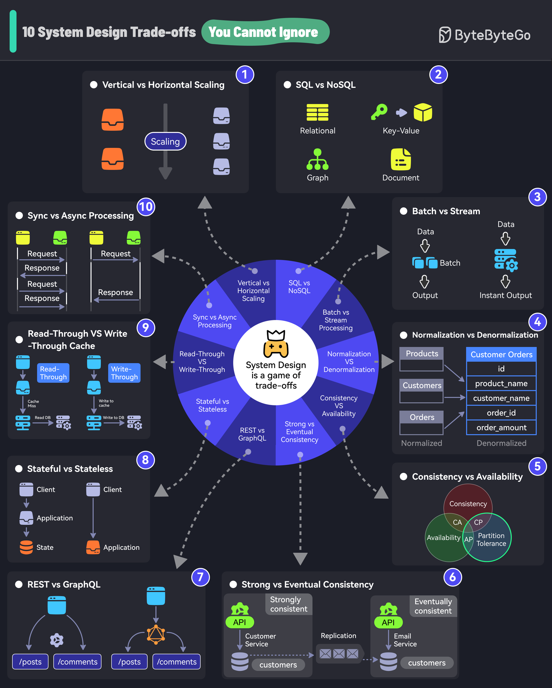

If you don’t know trade-offs, you DON’T KNOW system design.
Vertical scaling is adding more resources (CPU, RAM) to an existing server.
Horizontal scaling means adding more servers to the pool.
SQL databases organize data into tables of rows and columns.
NoSQL is ideal for applications that need a flexible schema.
Batch processing involves collecting data and processing it all at once. For example, daily billing processes.
Stream processing processes data in real time. For example, fraud detection processes.
Normalization splits data into related tables to ensure that each piece of information is stored only once.
Denormalization combines data into fewer tables for better query performance.
Consistency is the assurance of getting the most recent data every single time.
Availability is about ensuring that the system is always up and running, even if some parts are having problems.
Strong consistency is when data updates are immediately reflected.
Eventual consistency is when data updates are delayed before being available across nodes.
With REST endpoints, you gather data by accessing multiple endpoints.
With GraphQL, you get more efficient data fetching with specific queries but the design cost is higher.
A stateful system remembers past interactions.
A stateless system does not keep track of past interactions.
A read-through cache loads data from the database in case of a cache miss.
A write-through cache simultaneously writes data updates to the cache and storage.
In synchronous processing, tasks are performed one after another.
In asynchronous processing, tasks can run in the background. New tasks can be started without waiting for a new task.